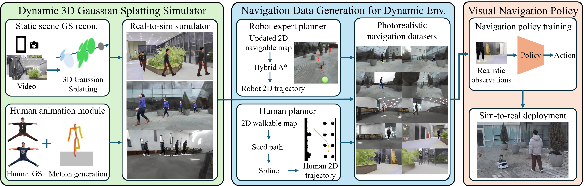
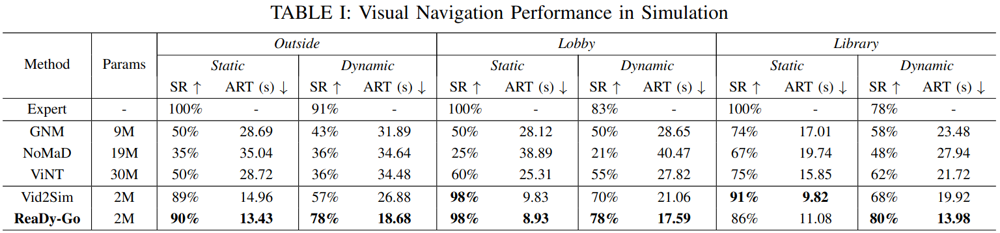
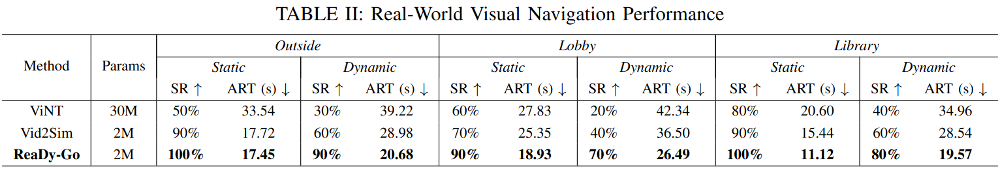
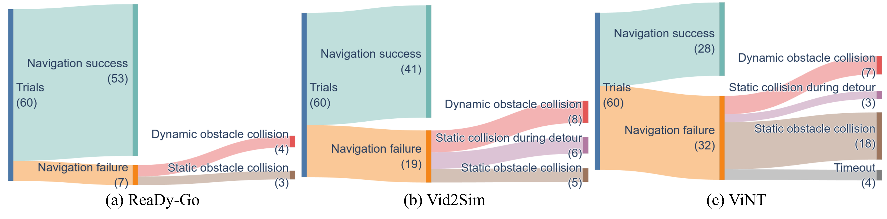

Visual navigation models often struggle in real-world dynamic environments due to limited robustness to the sim-to-real gap and the difficulty of training policies tailored to target deployment environments (e.g., households, restaurants, and factories). Although real-to-sim navigation simulation using 3D Gaussian Splatting (GS) can mitigate these challenges, prior GS-based works have considered only static scenes or non-photorealistic human obstacles built from simulator assets, despite the importance of safe navigation in dynamic environments. To address these issues, we propose ReaDy-Go, a novel real-to-sim simulation pipeline that synthesizes photorealistic dynamic scenarios in target environments by augmenting a reconstructed static GS scene with dynamic human GS obstacles, and trains navigation policies using the generated datasets. The pipeline provides three key contributions: (1) a dynamic GS simulator that integrates static scene GS with a human animation module, enabling the insertion of animatable human GS avatars and the synthesis of plausible human motions from 2D trajectories, (2) a navigation dataset generation framework that leverages the simulator along with a robot expert planner designed for dynamic GS representations and a human planner, and (3) robust navigation policies to both the sim-to-real gap and moving obstacles. The proposed simulator generates thousands of photorealistic navigation scenarios with animatable human GS avatars from arbitrary viewpoints. ReaDy-Go outperforms baselines across target environments in both simulation and real-world experiments, demonstrating improved navigation performance even after sim-to-real transfer and in the presence of moving obstacles. Moreover, zero-shot sim-to-real deployment in an unseen environment indicates its generalization potential.
The proposed photorealistic simulation pipeline for visual navigation in dynamic environments consists of three main components: (1) a real-to-sim dynamic 3D Gaussian Splatting (GS) simulator with animatable human GS avatars, (2) photorealistic navigation dataset generation for dynamic scenarios, and (3) visual navigation policy training.

ReaDy-Go overview figure.
ReaDy-Go generates photorealistic real-to-sim navigation datasets for dynamic scenes. The proposed human animation module synthesizes plausible body motions for human GS avatars within static GS scenes along given 2D trajectories, without relying on a physics engine. ReaDy-Go supports scalable generation of thousands of photorealistic navigation scenarios via expert and human planners.
ReaDy-Go demonstrates robust sim-to-real transfer of policies trained solely in simulation (video speed x2). ReaDy-Go achieves higher success rates and lower average reaching times than baseline methods in both static and dynamic environments, although baselines require up to 15x more parameters.
ReaDy-Go shows generalization via zero-shot sim-to-real deployment in an unseen environment (video speed x2). The policy achieves over a 50% success rate in both Static and Dynamic tasks. These results suggest that the policy learns general navigation behaviors, such as detouring around static and dynamic obstacles while reaching the goal. ReaDy-Go can provide a scalable approach toward general navigation if trained on larger navigation datasets from diverse environments.
Training environment-specific navigation policies using real-to-sim simulation is crucial for safe and efficient navigation. ReaDy-Go and Vid2Sim, both trained in real-to-sim target environments, achieve higher success rates and lower average reaching times than general navigation models (GNM, NoMaD, and ViNT) across all tasks and environments. This performance is particularly notable given that the general models require up to 15 times more parameters.

We observe three key takeaways from real-world experiments. First, the photorealistic real-to-sim simulation of ReaDy-Go facilitates sim-to-real transfer of visual navigation policies trained solely in simulation. ReaDy-Go achieves comparable success rates in both Static and Dynamic tasks in the real world, consistent with its simulation results across all environments. Second, environment-specific policies (ReaDy-Go and Vid2Sim) trained on real-to-sim datasets for target environments achieve higher success rates and lower average reaching times than the general navigation model (ViNT), although ViNT requires 15 times more parameters. This validates the practicality of ReaDy-Go for robots operating in specific environments, such as households, restaurants, and factories. Lastly, photorealistic dynamic obstacles in ReaDy-Go are a key factor in maintaining visual navigation performance in dynamic environments. In Dynamic, ReaDy-Go shows the highest success rate and the lowest average reaching time, with only a slight performance degradation compared to Static. In contrast, Vid2Sim exhibits a larger performance drop in Dynamic compared to ReaDy-Go. Since the two methods differ only in the training data, i.e., photorealistic human GS dynamic obstacles for ReaDy-Go versus human assets in a physics engine for Vid2Sim, these results suggest that the proposed photorealistic dynamic GS simulation helps improve navigation performance in dynamic scenarios, which is a practical advantage for robot deployment.

An analysis of the failure cases confirms the above findings. First, ViNT exhibited substantially more collisions with static obstacles than ReaDy-Go and Vid2Sim. This observation suggests that training an environment-specific visual navigation policy provides a practical advantage for real-world deployment. Second, while ReaDy-Go and Vid2Sim showed similar numbers of failures in cases unrelated to dynamic obstacle interactions, ReaDy-Go was more robust in situations involving dynamic obstacles. These results highlight the importance of incorporating photorealistic dynamic obstacles into the simulation pipeline to achieve robust navigation performance in dynamic real-world environments.

Failure case analysis in real-world experiments. ReaDy-Go yields fewer failures than the baselines, especially in failure modes related to dynamic obstacle avoidance, including Dynamic obstacle collision and Static collision during detour.
@ARTICLE{11578263,
author={Yoo, Seungyeon and Jang, Youngseok and Kim, Dabin and Han, Youngsoo and Jung, Seungwoo and Kim, H. Jin},
journal={IEEE Robotics and Automation Letters},
title={ReaDy-Go: Real-to-Sim Dynamic 3D Gaussian Splatting Simulation for Environment-Specific Visual Navigation with Moving Obstacles},
year={2026},
volume={},
number={},
pages={1-8},
keywords={Navigation;Simulation;Modeling;Robots;Visualization;Training;Trajectory;Pipelines;Art;Strontium;Vision-based navigation;visual learning;deep learning methods},
doi={10.1109/LRA.2026.3707355}}